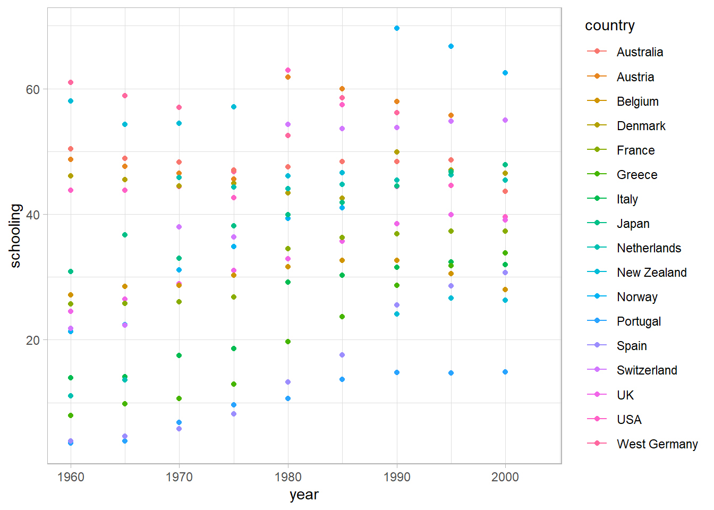
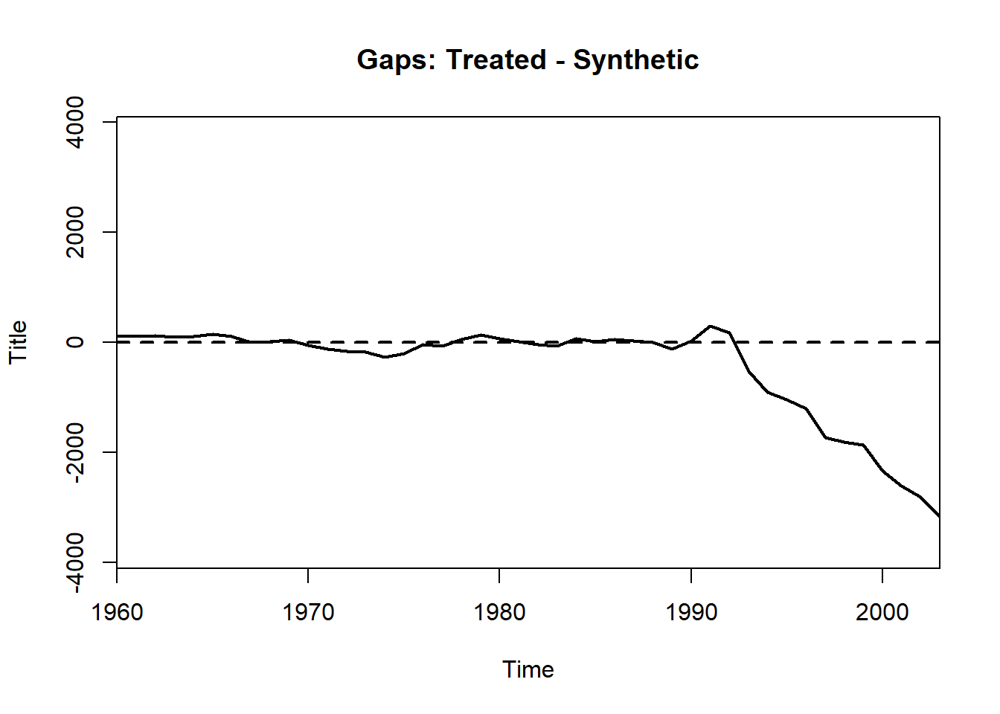
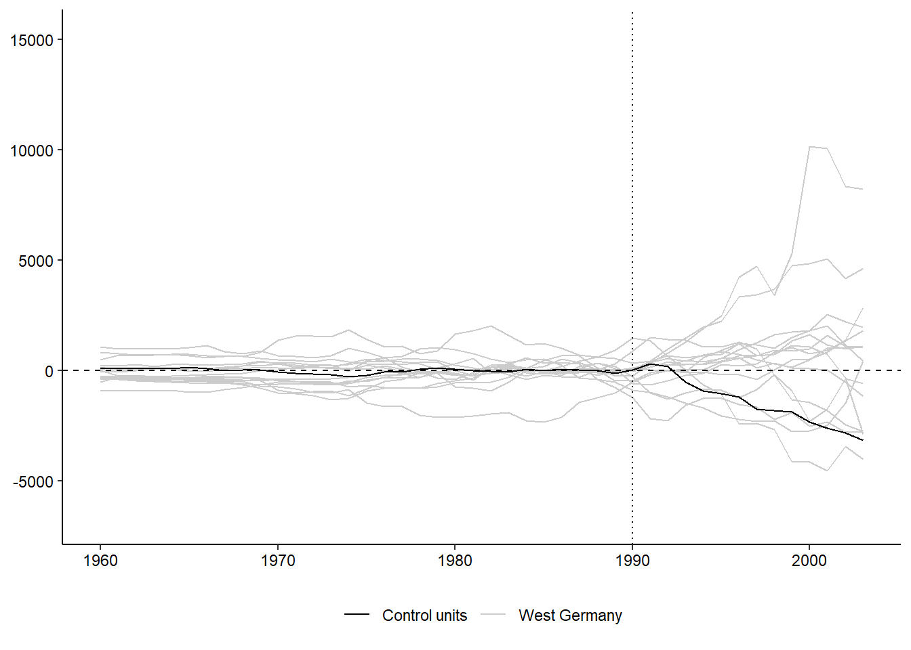
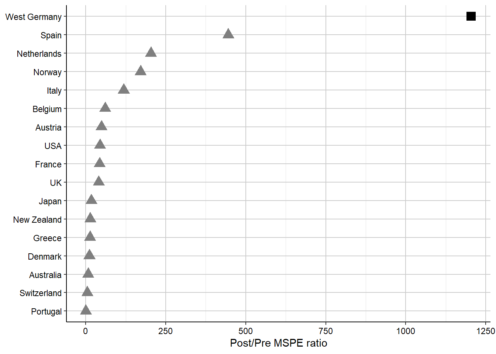
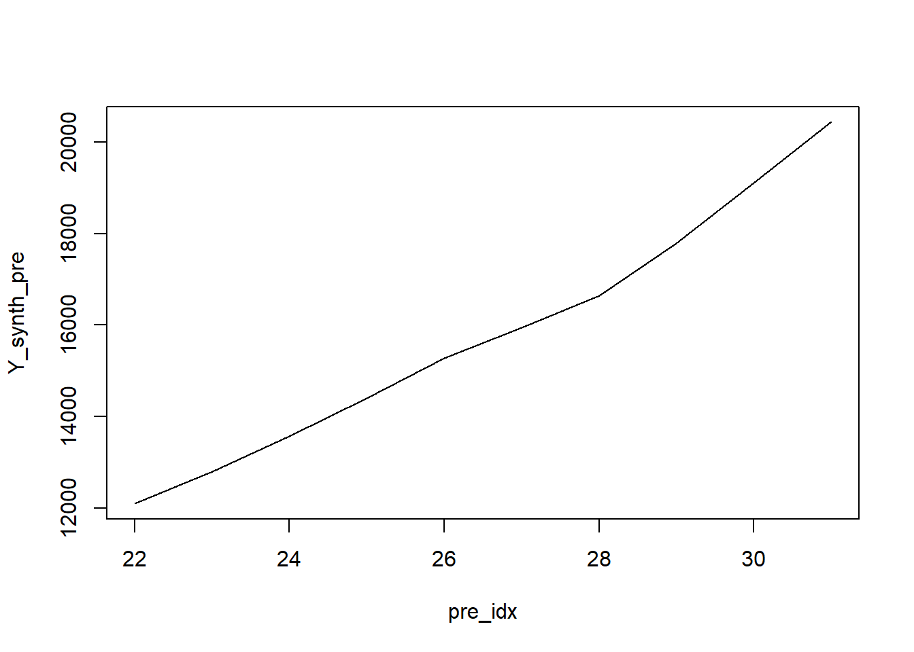
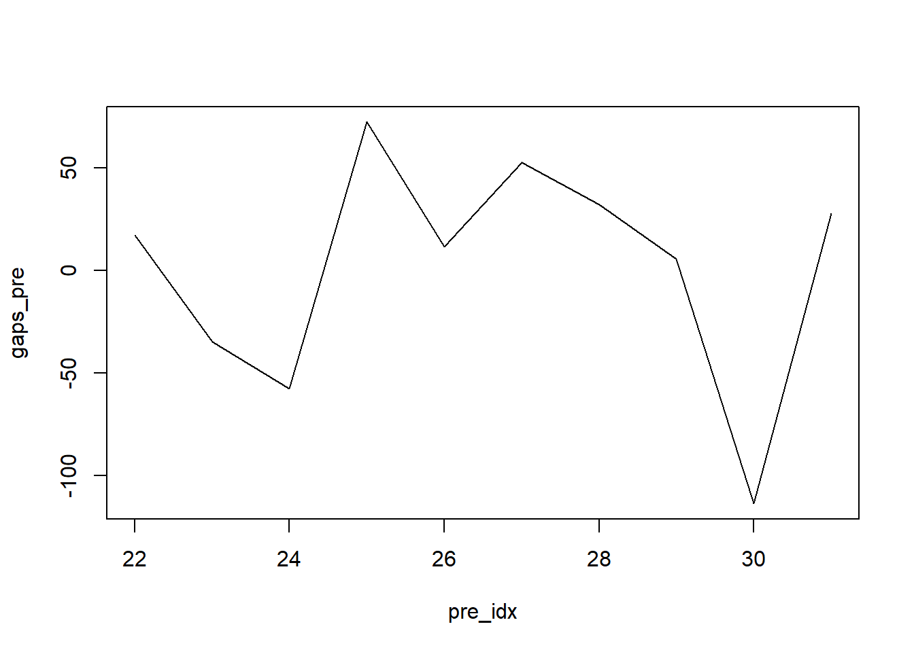
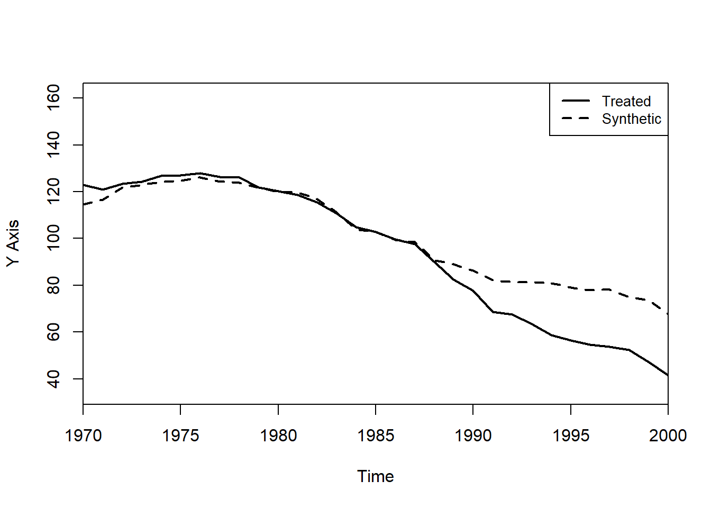

library(Synth) ##
## Synth Package: Implements Synthetic Control Methods.## See https://web.stanford.edu/~jhain/synthpage.html for additional information.library(SCtools)Loading required package: futureSelles peatükis käsitleme sünteetilise võrdlusobjekti meetodit (synthetic control method - SCM), tõlgitud eesti keelde otse ka kui sünteetilise kontrolli meetod.
See on välja töötatud olukordadeks, kus meid huvitab ühe konkreetse objekti – näiteks riigi, osariigi või linna – kokkupuude mingi poliitika või sündmusega ning soovime hinnata selle mõju. Erinevalt klassikalisest erinevuste-vahe (dif-dif) lähenemisest, kus on palju meetmes osalejaid ja kontrollüksusi, on sünteetilise võrdlusobjekti meetodi fookuses olukord, kus on vaid üks meetmes osalev objekt ja piiratud arv sobivaid võrdlusobjekte.
Meetodi vajadus tuleb tavaliselt makrotasemel mõju hindamise vajadusest. Näiteks, mis oli Saksamaa taasühinemise mõju Lääne-Saksamaa majanduskasvule; milline oli California osariigi ulatusliku suitsetamise vastase programmi mõju suitsetamisele; kuidas mõjutas Eesti kogumispensioni vabatahtlikuks muutmine majapidamiste tarbimist ja säästmist.
Nendele küsimustele vastamiseks ei piisa sageli üksiku võrdlusriigi või -regiooni valimisest, näiteks võrdleme Eestit Lätiga, sest subjektiivne valik võib kallutada tulemusi. Näiteks, miks mitte võrrelda Eestit Leeduga või Soomega.
Sünteetilise võrdlusobjekti meetod pakub süsteemse viisi sellise võrdlusobjekti konstrueerimiseks.
Empiirilises kirjanduses seostatakse sünteetilise võrdlusobjekti meetodit eelkõige Alberto Abadie ja kaasautorite töödega. Esimene tuntud rakendus on Abadie ja Gardeazabal (2003), kus hinnatakse Hispaania Baskimaa provintsi sõjalise konflikti mõju majanduskasvule võrreldes Baskimaad sünteetiliselt konstrueeritud piirkonnaga, mis on kaalutud kombinatsioon Hispaania teistest provintsidest. Järgmine oluline näide on Abadie, Diamond ja Hainmueller (2010) artikkel, kus analüüsiti California suitsetamise piiramise programmi mõjude võrreldes California osariiki sünteetilise võrdlusobjektiga, mis koosnes teiste osariikide kaalutud keskmisest. Viimaks võib välja tuua Abadie, Diamond ja Hainmueller (2014) Saksamaa taasühinemise mõju analüüsi, kus konstrueeriti Lääne-Saksamaale võrdluseks OECD riikide sünteetilise kombinatsioon.
Eestis on meetodit kasutatud näiteks Centari 2023. aasta analüüsis, kus hinnati lapsehoiu ja alushariduse projektide mõju koolieelsetes lasteasutustes käivate laste osakaalule ja naiste tööhõivele, moodustades sekkumispiirkondadele sobivad sünteetilised kontrollpiirkonnad. Vt nende raporti lisa 5 ja 6: “Sünteetilise kontrollgrupi meetodi tulemused: lapsehoiu ja alushariduse projektide mõju koolieelsetes lasteasutustes käivate laste osakaalule ja naiste tööhõivele” (link).
Samuti kasutab Meriküll (2025) sünteetilist dif-dif lähenemist (seda vaatame põgusalt peatüki lisas), et hinnata, kuidas kohustusliku kogumispensioni (II samba) vabatahtlikuks muutmine mõjutas Eesti majapidamiste finantskäitumist ja inflatsiooni, võrreldes Eestit riikidega, kus sellist reformi ei olnud. (“The impact of early pension withdrawals on household finances and inflation“ (link).
Ülaltoodud näited illustreerivad, et sünteetilise kontrolli meetod on kasulik just siis, kui mõjutatud üksusi on vähe ja me soovime vältida ühe võrdlusriigi või -piirkonna ad hoc valikut.
Olgu meil \(J + 1\) objekti: üks uuritav objekt \(j = 1\), näiteks Lääne-Saksamaa või Eesti, ning \(J\) potentsiaalset võrdlusobjekti (niinimetatud doonorgrupp), näiteks kõik teised Euroopa riigid.
Ajalist dimensiooni tähistame \(t = 1, \dots, T\), kus sekkumine toimub alates ajast \(T_0 + 1\). Perioodid \(t \leq T_0\) on seega sekkumiseelsed, perioodid \(t > T_0\) sekkumisjärgsed.
Olgu \(Y_{it}\) objekt \(i\) tegelik tulemusmuutuja (näiteks SKP inimese kohta) perioodil \(t\). Meid huvitab sekkumise mõju uuritavale üksusele \(j = 1\), mida defineerime kui vahe tegeliku tulemuse ja võrdlusseisundi tulemuse vahel peale sekkumist:
\[ \alpha_{1t} = Y_{1t}^{I} - Y_{1t}^{N}, \quad t > T_0, \]
kus \(Y_{1t}^{I}\) on tulemus sekkumisega (vaadeldav) ning \(Y_{1t}^{N}\) oleks tulemus ilma sekkumiseta (võrdlusseisund), mida me ei näe.
Sünteetilise kontrolli idee seisneb selles, et võrdlusseisundi aegrida \(Y_{1t}^{N}\) konstrueeritakse võrdlusobjektide kaalutud keskmisena:
\[ Y_{1t}^{N} \approx \sum_{j=2}^{J+1} w_j Y_{jt}, \quad t = 1, \dots, T, \]
kus kaalud \(w_j \geq 0\) ja \(\sum_{j=2}^{J+1} w_j = 1\).
Need kaalud määravad „sünteetilise võrdlusobjekti” ehk hüpoteetilise objekti, mis on kombinatsioon olemasolevatest võrdlusüksustest ja mille sekkumiseelse dünaamika soovime sobitada uuritava objektiga võimalikult täpselt. Sellisel juhul on mõju hinnang peale meedet ehk ajapunktis \(t > T_0\):
\[ \hat{\alpha}_{1t} = Y_{1t} - \sum_{j=2}^{J+1} \hat{w}_j Y_{jt}. \]
Graafiliselt saame võrrelda uuritava objekti tegelikku aegrida ning sünteetilise kontrolli aegrida, ning sekkumisejärgne erinevus nende vahel annab visuaalse ja kvantitatiivse hinnangu sekkumise mõju kohta.
Näiteks võime leida, et Eesti jaoks saame leibkondade säästmismäära enne kogumispensioni vabaks laskmist jäljendada, kui võtame Läti kaaluga 0.8 ja Leedu kaaluga 0.2. Seejärel kasutame samade kaaludega säästmimäärasid hindamaks, mis oleks juhtunud Eestiga, kui Eesti ei oleks kogumispensioni vabatahtlikuks teinud.
Kaalude valimisel riikidele soovime võimalikult täpselt jäljendada sekkumiseelsel perioodil uuritava tunnuse \(Y\) dünaamikat, nt SKP inimese kohta Lääne-Saksamaal enne Saksamaa taasühinemist. Lisaks uuritavale muutujale \(Y\) kasutab meetod sobitamiseks aga ka teisi selgitavaid tunnuseid ja nende sekkumiseelseid tulemusi. Olgu \(X_1\) vektor uuritava objekti tunnustest (nt rahvastiku vanusstruktuur, rahvastiku haridus, majanduse struktuur) ja sekkumiseelsete tulemuste kokkuvõtlikest näitajatest (näiteks SKP inimese kohta keskmised väärtused enne Saksamaa ühinemist), ning \(X_0\) maatriks samade tunnuste kohta kontrollobjektide jaoks:
\[ X_1 = (x_{11}, \dots, x_{1K})', \quad X_0 = \begin{pmatrix} x_{21} & \dots & x_{J+1,1} \\ \vdots & \ddots & \vdots \\ x_{2K} & \dots & x_{J+1,K} \end{pmatrix} \]
Lisaks kaaludele objektidele \(w = (w_2, \dots, w_{J+1})'\) peame leidma ka kaalud, mis arvestaks, millised tunnused on meie jaoks olulisemad. Seda kaalumaatriksit tähistame tähisega \(V\), mis on diagonaalmaatriks, kus kaalud näitavad suhtelist olulisust tunnuste vahel.
Intuitsioon on see, et mõni tunnus võib olla suurema tähtsusega tulevase tulemuse väärtuse kohta ning seetõttu saab suurema kaalu, kui riikide kaale leiame.
Riikide kaalud valitakse nii, et sobitada uuritava objekti tunnused võimalikult hästi sünteetilisele kontrollile enne meedet, minimeerides erinevuse tegeliku väärtuse ja kaalutud väärtuse vahel:
\[ \min_{w} (X_1 - X_0 w)' V (X_1 - X_0 w) \]
võttes arvesse tingimusi \(w_j \geq 0\) ja \(\sum_j w_j = 1\). See miinimumväärtus on nn W-kaotus (W-loss), mis näitab, kui hästi suudame etteantud \(V\) korral leida kaalud riikidele nii, et erinevus selgitavates tunnustes oleks võimalikult väike.
Selle võime kirjutada ka nii:
\[ \min_{w} \sum_{m=1}^{k} v_m (X_{1m} - \sum_{j=2}^{J+1} w_j X_{jm})^2 \]
Maatriks \(V\) valitakse omakorda nii, et minimeerida sekkumiseelsel perioodil sünteetilise kontrolli prognoosivea ruutkeskmine või sekkumiseelne ruutkeskmine prognoosiviga (Mean Square Prediction Error - MSPE või Root Mean Square Prediction Error - RMSPW). See on seotud nn V-kaotusega (V-loss), ehk sellega, kui hästi sekkumiseelse väljundi rada on uuritava objekti ja sünteetilise kontrolli vahel ühtiv.
Seega on meil seega kaks kaalude vektorit: \(v_m\) on tunnustele ja see peegeldab eri tunnuste rolli Y prognoosimisel, ja \(w_j\) on objektidele, mis leiab kõige sarnasemad objektid.
Kaalude leidmiseks on erinevaid võimalusi. Üks levinuim lähenemine on minimeerida tegeliku ja prognoositud tulemusnäitaja erinevust sekkumiseelsel perioodil.
\[MSPE= \frac{1}{T_0} \sum_{t=1}^{T_{0}} {\left( Y_{1t}−\sum_{j=2}^{J+1} w_{j}^{\ast} \left(V \right)Y_{jt}\right)}^{2} \] Või ruutjuur sellest.
\[ RMSPE = \sqrt{\frac{1}{T_0} \sum_{t=1}^{T_0} \left( Y_{it} - \sum_{j=2}^{J+1} w_{j}^{\ast} \left( V \right)Y_{jt}\right)^{2}}\]
Kaalude leidmine toimub iteratiivselt ehk samm-sammuliselt. Esmalt valime \(V\) mingid väärtuse (ehk kaalud tunnustele). Seejärel leiame optimaalsed kaalud objektidele \(w\). Proovime erinevaid \(V\) väärtusi ja valime välja, mis kõige paremini lähendab tegelikku mineviku aegrida.
Sünteetilise kontrolli meetodi korrektne tõlgendamine põhineb mitmel olulisel eeldusegrupil.
Esimene eeldus puudutab vastastikmõjusid ehk üldise tasakaalumõju puudumist. Eeldame, et sekkumine uuritaval objektil ei mõjuta otseselt kontrollobjektide tulemusi. Näiteks Baskimaa konflikti analüüsis eeldatakse, et konflikt ei mõjuta teiste Hispaania regioonide majanduskasvu. Teine näide oleks Eesti ettevõtte tulumaksumäära langetus, mille puhul eeldaksime, et see ei mõjuta naaberriikide ettevõtete majandusnäitajaid. See on sarnane SUTVA eeldusest tuntud nõudega, et ühe üksuse osalemine meetmes ei mõjuta teise üksuse tulemust.
Kui see eeldus ei kehti ja sekkumine „lekib” kontrollüksustesse, siis sünteetiline kontroll ei esinda enam korralikult võrdlusseisundit ilma sekkumiseta. Praktikas püüame jätta välja need objektid võrdlusest, mis võiks olla samuti mõjutatud. Näiteks võrdleme Eestit teiste Kesk- ja Ida-Euroopa riikidega, aga Läti ja Leedu jätame igaks juhuks võrdlusrühmast välja.
Teine oluliste eelduste rühm puudutab dünaamikat sekkumiseelsel perioodil. Nõuame, et kontrollgrupi tulemusi mõjutab sama struktuurne protsess, mis uuritavat üksust, ning nii uuritav objekt kui ka kontrollüksused alluvad sarnastele šokkidele. See on analoog paralleelsete trendide eeldusele erinevuste vahe (dif-dif) meetodi puhul, kuid sünteetilise kontrolli korral võtame seda arvesse leides sobilikud objektid.
Mida rohkem on sekkumiseelseid perioode, seda paremini on võimalik kontrollida nii vaadeldavate kui ka mittevaadeldavate tegurite mõju. Kui suudame sekkumiseelsel perioodil väga täpselt sobitada nii selgitavad tunnused \(X\) kui ka väljundtunnuse \(Y_t\) dünaamika, siis on usutav, et sama seos püsib ka sekkumisjärgsel perioodil.
Selleks, et veenda lugejat, et leitud tulemused ei ole juhuslikud, kasutatakse sünteetilise kontrolli kontekstis sageli platseeboanalüüse ja RMSPE-suhetega teste.
Platseeboanalüüsi põhiidee seisneb selles, et rakendame sünteetilise kontrolli meetodit mitte ainult uuritavale üksusele, vaid ka igale doonorgrupi üksusele. Iga võrdlusobjekti jaoks konstrueerime sünteetilise versiooni, kasutades ülejäänud üksusi doonorina, ning „teeskleme”, et sekkumine toimus samal ajal ka selles võrdlusobjektis.
Iga objekti puhul võrdleme sekkumisjärgsel perioodil tegelikku tulemust selle sünteetilise võrdlusobjektiga. Kui tegelikult mingit mõju ei olnud, peaks nende kahe aegrea vahe jääma väikeseks ning olema sekkumiseelse perioodiga võrreldav. See loob niiöelda nulljaotuse (olukorra, mis oleks ilma sekkumiseta), millega saame võrrelda meid huvitava uuritava üksuse kõrvalekallet. Kui meie objekt on sarnane kõigi teistega, siis ilmselt mõju ei ole.
Visuaalselt võime joonistada kõikide üksuste (uuritava objekti ja platseebode) trajektoorid ning nende erinevuse sünteetilisest kontrollist. Kui käsitletava üksuse kõrvalekalle on selgelt suurem kui enamikul platseebodel, viitab see tõsiseltvõetavale sekkumise efektile.
Platseeboanalüüsi saab kvantifitseerida ruutkeskmise prognoosivea suhete kaudu. Olgu uuritava või platseebo üksuse korral erinevus tegeliku ja sünteetilise objekti vahel enne ja pärast järgmine:
\[ \text{RMSPE}\_{\text{pre}}_j = \sqrt{\frac{1}{T_0} \sum_{t=1}^{T_0} (Y_{jt} - Y_{jt}^{\text{SC}})^2}, \]
\[ \text{RMSPE}\_{\text{post}}_j = \sqrt{\frac{1}{T - T_0} \sum_{t=T_0+1}^{T} (Y_{jt} - Y_{jt}^{\text{SC}})^2}, \]
kus \(Y_{it}^{\text{SC}}\) on sünteetilise kontrolli tulemus. Seejärel defineerime suhte iga objekti jaoks:
\[ R_j = \frac{\text{RMSPE}_{\text{post}_j}} {\text{RMSPE}_{\text{pre}_j}} \]
Suhe \(R_j\) suurem kui 1 viitab sellele, et sekkumisjärgne sobivus on halvem võrreldes sekkumiseelsega, ning suurem suhtarv tähendab suuremat eeldatavat sekkumise mõju. Arvutame selle suhte nii uuritava üksuse kui ka kõikide platseebode jaoks ning järjestame need kahanevas järjekorras. Uuritava üksuse suhteline positsioon selles jaotuses annabki täpse p-väärtuse:
\[ p = \frac{\#\{i : R_i \geq R_{\text{treated}}\}}{\text{kõigi üksuste arv}}. \]
\(\{i : R_i \geq R_{\text{treated}}\) tähendab sellist arvu i, kus meie objekti R on suurem.
Näiteks, Saksamaa ühinemise analüüsis oli vaadeldud üksuse (Saksamaa) suhe kõige suurem kõigi riikide seas, mis andis p-väärtuseks ligikaudu \(1/17 \approx 0{,}058\). See tähendab, et vaid ühel juhul 17-st võiksime oodata vähemalt sama suurt kõrvalekallet, kui mõju tegelikult ei oleks.
Kui kaalud \(w\) ja \(V\) on õigesti valitud, saavutatakse tasakaal nii selgitavate tunnuste kui ka sekkumiseelse dünaamika osas. See tähendab, et sünteetiline kontroll on iga üksiku selgitava tunnuse osas uuritavale üksusele võimalikult sarnane ning et ka tulemusmuutuja sekkumiseelne aegrida on uuritava üksuse ja sünteetilise kontrolli vahel võimalikult ühtiv.
Praktilises rakenduses kontrollitakse tasakaalu tavaliselt nii tabelite kui ka graafikute abil. Tunnuste puhul võrreldakse uuritava üksuse ja sünteetilise kontrolli keskmisi väärtusi; tulemusmuutuja puhul vaadeldakse sekkumiseelse perioodi trajektoore. Hea tasakaal on eelduseks usutavatele mõjuhinnangutele.
R-keskkonnas on sünteetilise kontrolli rakendamiseks levinud paketid Synth ja SCtools, samuti uuemad paketid, mis realiseerivad üldistatud või augmenteeritud lähenemisi (nt synthdid, augsynth). Alljärgnev näide annab ülevaate klassikalise sünteetilise kontrolli rakendamisest ühe uuritava ja mitme kontrollüksusega.
Kõigepealt on vajalik, et meil on paneelandmestik, kus igal real on üksus, aasta ja tulemusmuutuja ning tunnused:
library(Synth) ##
## Synth Package: Implements Synthetic Control Methods.## See https://web.stanford.edu/~jhain/synthpage.html for additional information.library(SCtools)Loading required package: futureMe kasutame pakette Synth ja SCtools . Vt https://cran.r-project.org/web/packages/Synth/index.html ja https://cran.r-project.org/web/packages/SCtools/index.html
Põhiviide: Abadie A, Diamond A, Hainmueller J (2011). “Synth: An R Package for Synthetic Control Methods in Comparative Case Studies.” Journal of Statistical Software, 42(13), 1–17. https://www.jstatsoft.org/v42/i13/
Muud paketid:
- kui mitu objekti gsynth, https://cran.r-project.org/web/packages/gsynth/index.htm
- saab kombineerida dif-dif analüüsiga
library(tidyverse)
library(Synth)
library(SCtools)
library(foreign)Andmed artiklist A. Abadie, A. Diamond, and J. Hainmueller. 2014. Comparative Politics and the Synthetic Control Method American Journal of Political Science. Viide https://economics.mit.edu/sites/default/files/publications/Comparative%20Politics%20and%20the%20Synthetic%20Control.pdf
Selles rakendame sünteetilise võrdlusobjekti meetodit, et hinnata 1990. aasta Saksamaa taasühinemise mõju majandusele. Tegu oli ühe olulisema poliitilis sündmusega sõjajärgses Euroopas. Pärast Berliini müüri langemist 9. novembril 1989 ühinesid Saksa Demokraatlik Vabariik ja Saksamaa Liitvabariik ametlikult 3. oktoobril 1990. Sel ajal oli Lääne-Saksamaa SKP elaniku kohta ligikaudu kolm korda kõrgem kui Ida-Saksamaal (Lipschitz ja McDonald 1990).
Meid huvitab, mis oli ühinemise mõju Lääne-Saksamaa SKP-le.
Laeme andmed
#Muutke ära andmete kataloog
datapath = "http://kodu.ut.ee/~avork/files/oppetoo/pohjustagajarg/"
#Lugege sisse andmefail
d <- read.dta(file = paste0(datapath, "repgermany.dta"))Vaatame pisut andmetele sisse.
Kasutame OECD riikide paneelandmeid perioodi 1960–2003 kohta. Saksamaa taasühinemine toimus 1990. aastal, mis annab 30-aastase sekkumiseelse perioodi. Valim lõpeb 2003. aastal, sest ligikaudu kümneaastast perioodi pärast taasühinemist võib pidada mõistlikuks piiriks usutavale prognoosiperioodile. Sünteetiline Lääne-Saksamaa konstrueeritakse doonorriikide hulgast valitud potentsiaalsete võrdlusriikide kaalutud keskmisena. Meie doonorriikide hulgas on valim 16 OECD liikmesriigist.
Tulemusmuutuja on riigi SKP inimese kohta (PPP) järgi korrigeeritud ja mõõdetud 2002. aasta USA dollarites. Taasühinemiseelseid tunnused: SKP elaniku kohta, inflatsioonimäär, tööstuse osakaal loodud lisandväärtusest, investeeringute määr, haridustase ja kaubanduse avatuse mõõdik.
Peamised tunnused:
head(d) index country year gdp infrate trade schooling invest60 invest70
1 1 USA 1960 2879 NA 9.693181 43.8 NA NA
2 1 USA 1961 2929 1.075182 9.444654 NA NA NA
3 1 USA 1962 3103 1.116071 9.429324 NA NA NA
4 1 USA 1963 3227 1.214128 9.470706 NA NA NA
5 1 USA 1964 3420 1.308615 9.725879 NA NA NA
6 1 USA 1965 3667 1.668461 9.730347 43.8 NA NA
invest80 industry
1 NA NA
2 NA NA
3 NA NA
4 NA NA
5 NA NA
6 NA NAMõned joonised
SKP inimese kohta
#
ggplot(d, aes(x = year, y = gdp, color = country)) +
geom_line(aes(linetype = (index != 7))) +
geom_line(
data = d |> filter(index == 7),
color = "black",
linewidth = 1.3,
linetype = "solid"
) +
guides(linetype = "none") +
theme_light() +
labs(x = "", y = "GDP per capita")
Vaadake ka teisi muutujaid. Asendage gdp teiste näitajatega. Vajadusel lisage geom_point() kui vaatlused on vaid mõne aasta kohta.
d |>
ggplot(aes(x = year, y = schooling, group = country, color = country)) +
geom_line(aes(linetype=(index!=7))) +
geom_point() +
guides(linetype = "none") +
theme_light()Warning: Removed 61 rows containing missing values or values outside the scale range
(`geom_line()`).Warning: Removed 597 rows containing missing values or values outside the scale range
(`geom_point()`).
Tavaline käskude järjekord
Andmete ettevalmistamine
dataprep.out <-
dataprep(
foo = d,
predictors = c("gdp","trade","infrate"),
dependent = "gdp", #y variable
unit.variable = 1, #first variable is index variable
time.variable = 3, #third variable is time variable
special.predictors = list(
list("industry" ,1981:1990, c("mean")),
list("schooling",c(1980,1985), c("mean")),
list("invest80" ,1980, c("mean"))
),
treatment.identifier = 7, #index = 7 is West Germany
controls.identifier = unique(d$index)[-7], #all the rest numbers
time.predictors.prior = 1981:1990, #time for normal predictors
time.optimize.ssr = 1981:1990, #time period to minimize difference between outcome of treated and synthetic control
unit.names.variable = 2, #names
time.plot = 1960:2003 #whole time period
)
Missing data: treated unit; special predictor: special.industry.1981.1990 ; for period: 1990
We ignore (na.rm = TRUE) all missing values for predictors.op.Vaata üle objekt dataprep.out, mille me salvestasime. See loob lihtsalt kõik vajalikud andmemaatriksid ja vektorid.
str(dataprep.out)List of 8
$ X0 : num [1:6, 1:16] 18029.8 19.2 4.74 30.6 60.15 ...
..- attr(*, "dimnames")=List of 2
.. ..$ : chr [1:6] "gdp" "trade" "infrate" "special.industry.1981.1990" ...
.. ..$ : chr [1:16] "1" "2" "3" "4" ...
$ X1 : num [1:6, 1] 15808.9 56.78 2.59 34.54 55.5 ...
..- attr(*, "dimnames")=List of 2
.. ..$ : chr [1:6] "gdp" "trade" "infrate" "special.industry.1981.1990" ...
.. ..$ : chr "7"
$ Z0 : int [1:10, 1:16] 13533 13940 15008 16549 17600 18439 19407 20711 22047 23064 ...
..- attr(*, "dimnames")=List of 2
.. ..$ : chr [1:10] "1981" "1982" "1983" "1984" ...
.. ..$ : chr [1:16] "1" "2" "3" "4" ...
$ Z1 : int [1:10, 1] 12115 12761 13519 14481 15291 15998 16679 17786 18994 20465
..- attr(*, "dimnames")=List of 2
.. ..$ : chr [1:10] "1981" "1982" "1983" "1984" ...
.. ..$ : chr "7"
$ Y0plot : int [1:44, 1:16] 2879 2929 3103 3227 3420 3667 3974 4154 4494 4805 ...
..- attr(*, "dimnames")=List of 2
.. ..$ : chr [1:44] "1960" "1961" "1962" "1963" ...
.. ..$ : chr [1:16] "1" "2" "3" "4" ...
$ Y1plot : int [1:44, 1] 2284 2388 2527 2610 2806 3005 3168 3241 3571 3998 ...
..- attr(*, "dimnames")=List of 2
.. ..$ : chr [1:44] "1960" "1961" "1962" "1963" ...
.. ..$ : chr "7"
$ names.and.numbers:'data.frame': 17 obs. of 2 variables:
..$ unit.names : chr [1:17] "West Germany" "USA" "UK" "Austria" ...
..$ unit.numbers: num [1:17] 7 1 2 3 4 5 6 8 9 10 ...
$ tag :List of 13
..$ foo : chr [1:11] "c(1, 1, 1, 1, 1, 1, 1, 1, 1, 1, 1, 1, 1, 1, 1, 1, 1, 1, 1, 1, 1, 1, 1, 1, 1, 1, 1, 1, 1, 1, 1, 1, 1, 1, 1, 1, 1"| __truncated__ "c(\"USA\", \"USA\", \"USA\", \"USA\", \"USA\", \"USA\", \"USA\", \"USA\", \"USA\", \"USA\", \"USA\", \"USA\", \"| __truncated__ "c(1960, 1961, 1962, 1963, 1964, 1965, 1966, 1967, 1968, 1969, 1970, 1971, 1972, 1973, 1974, 1975, 1976, 1977, 1"| __truncated__ "c(2879, 2929, 3103, 3227, 3420, 3667, 3974, 4154, 4494, 4805, 4999, 5362, 5838, 6464, 6951, 7519, 8300, 9146, 1"| __truncated__ ...
..$ predictors : int [1:3] 4 6 5
..$ predictors.op : chr "mean"
..$ special.predictors :List of 3
.. ..$ :List of 3
.. .. ..$ : chr "industry"
.. .. ..$ : int [1:10] 1981 1982 1983 1984 1985 1986 1987 1988 1989 1990
.. .. ..$ : chr "mean"
.. ..$ :List of 3
.. .. ..$ : chr "schooling"
.. .. ..$ : num [1:2] 1980 1985
.. .. ..$ : chr "mean"
.. ..$ :List of 3
.. .. ..$ : chr "invest80"
.. .. ..$ : num 1980
.. .. ..$ : chr "mean"
..$ dependent : int 4
..$ unit.variable : num 1
..$ time.variable : num 3
..$ treatment.identifier : num 7
..$ controls.identifier : num [1:16] 1 2 3 4 5 6 8 9 10 12 ...
..$ time.predictors.prior: int [1:10] 1981 1982 1983 1984 1985 1986 1987 1988 1989 1990
..$ time.optimize.ssr : int [1:10] 1981 1982 1983 1984 1985 1986 1987 1988 1989 1990
..$ time.plot : int [1:44] 1960 1961 1962 1963 1964 1965 1966 1967 1968 1969 ...
..$ unit.names.variable : num 2X0 – kontrollüksuste ennustajate maatriks. Tavaliselt on need aastate keskmised, vastavalt määratletule. Iga veerg on üks piirkond.
dataprep.out$X0 1 2 3 4
gdp 18029.800000 12664.000000 14817.000000 14347.30000
trade 19.199796 52.373944 74.630803 133.61179
infrate 4.740062 6.585358 3.529565 4.58030
special.industry.1981.1990 30.595133 39.061470 35.485312 33.48119
special.schooling.1980.1985 60.150002 34.300001 60.900000 32.10000
special.invest80.1980 22.375999 17.587999 26.642000 21.87600
5 6 8 9
gdp 14857.100000 14293.200000 13869.700000 14462.300000
trade 69.557355 44.736920 42.683143 106.078918
infrate 5.945661 6.368286 9.721693 2.543722
special.industry.1981.1990 27.205048 32.210452 35.912703 32.767722
special.schooling.1980.1985 42.950001 35.400000 29.750000 44.400000
special.invest80.1980 22.217999 27.236000 26.728001 21.840000
10 12 14 16
gdp 14370.200000 19282.90000 13714.800000 9438.40000
trade 74.635595 71.45849 23.042788 43.00722
infrate 7.664475 3.40692 2.058197 19.04085
special.industry.1981.1990 38.716592 31.87100 39.561175 30.26204
special.schooling.1980.1985 40.150000 53.95000 40.900002 21.70000
special.invest80.1980 31.594000 30.96400 34.986000 24.00200
18 19 20 21
gdp 7761.60000 9935.500000 14368.100000 12498.20000
trade 69.97408 39.656889 33.776868 58.87568
infrate 17.30977 9.362696 8.127678 10.87994
special.industry.1981.1990 32.52951 36.403378 32.880581 31.76784
special.schooling.1980.1985 12.15000 15.450000 47.950001 46.35000
special.invest80.1980 26.48800 24.568001 29.695999 25.52200X1 – vaadeldava üksuse andmevektor. Sama ajaperiood.
dataprep.out$X1 7
gdp 15808.900000
trade 56.777813
infrate 2.594799
special.industry.1981.1990 34.538488
special.schooling.1980.1985 55.500000
special.invest80.1980 27.017998Z0 – kontrollüksuste väljundmuutuja maatriks sekkumiseelses perioodis.
dataprep.out$Z0 1 2 3 4 5 6 8 9 10 12 14 16
1981 13533 9161 11242 11079 11106 10929 10593 11304 10548 15338 9986 7870
1982 13940 9917 12148 11827 12115 11869 11275 11784 11205 15963 10813 8204
1983 15008 10669 13048 12334 12822 12518 11812 12419 12022 16611 11346 8388
1984 16549 11336 13533 13113 13777 13145 12543 13234 13220 17710 12064 8834
1985 17600 12068 14296 13735 14698 13746 13285 13938 14354 18812 12978 9297
1986 18439 12795 14921 14292 15608 14308 13896 14613 15184 19458 13590 9525
1987 19407 13717 15549 15013 16024 14940 14688 15197 15823 20120 14425 9548
1988 20711 14864 16595 16209 16766 16040 15784 16082 16299 21334 15862 10277
1989 22047 15716 17768 17345 17418 17193 16875 17387 17043 22965 17269 11036
1990 23064 16397 19070 18526 18237 18244 17946 18665 18004 24518 18815 11405
18 19 20 21
1981 5812 7447 11513 9736
1982 6263 7957 11537 10687
1983 6479 8378 12300 11262
1984 6570 8812 13120 12141
1985 6959 9259 14019 12556
1986 7414 9744 14537 13085
1987 8126 10542 15554 13402
1988 9057 11434 16524 13569
1989 10042 12417 17255 14124
1990 10894 13365 17322 14420Ja vaadeldava üksuse puhul:
dataprep.out$Z1 7
1981 12115
1982 12761
1983 13519
1984 14481
1985 15291
1986 15998
1987 16679
1988 17786
1989 18994
1990 20465Joonistamiseks vajalikud andmed on salvestatud objektidesse Y1plot ja Y0plot.
Nüüd saame käivitada käsu synth, et leida optimaalsed kaalud, mis loovad uuritavale üksusele parima võimaliku sünteetilise kontrolli.
synth.out <- synth(dataprep.out)
X1, X0, Z1, Z0 all come directly from dataprep object.
****************
searching for synthetic control unit
****************
****************
****************
MSPE (LOSS V): 2780.803
solution.v:
0.6382063 0.000793192 0.02569357 3.5794e-06 0.005660648 0.3296428
solution.w:
0.140826 0.0008091836 0.3647215 0.001026341 0.001071105 0.000802521 0.0006526096 0.1809177 0.0006463323 0.171095 0.1346767 0.0004573153 0.0004194751 0.0005437716 0.0007120638 0.0006224255 Tulemuste kokkuvõtteks on kolm mugavat funktsiooni.
Kõigi tabelite (V- ja W-kaalud ning sobivus käsitletud ja sünteetilise kontrolli vahel) saamiseks kasutame käsku synth.tab()
synth.tables <- synth.tab(dataprep.res = dataprep.out,
synth.res = synth.out)
print(synth.tables)$tab.pred
Treated Synthetic Sample Mean
gdp 15808.900 15807.581 13669.381
trade 56.778 64.942 59.831
infrate 2.595 3.342 7.617
special.industry.1981.1990 34.538 34.220 33.794
special.schooling.1980.1985 55.500 53.721 38.659
special.invest80.1980 27.018 27.022 25.895
$tab.v
v.weights
gdp 0.638
trade 0.001
infrate 0.026
special.industry.1981.1990 0
special.schooling.1980.1985 0.006
special.invest80.1980 0.33
$tab.w
w.weights unit.names unit.numbers
1 0.141 USA 1
2 0.001 UK 2
3 0.365 Austria 3
4 0.001 Belgium 4
5 0.001 Denmark 5
6 0.001 France 6
8 0.001 Italy 8
9 0.181 Netherlands 9
10 0.001 Norway 10
12 0.171 Switzerland 12
14 0.135 Japan 14
16 0.000 Greece 16
18 0.000 Portugal 18
19 0.001 Spain 19
20 0.001 Australia 20
21 0.001 New Zealand 21
$tab.loss
Loss W Loss V
[1,] 0.0007521133 2780.803Pane tähele, et tab.loss sisaldab kahte väärtust:
W–kaotus, mis on seotud ennustajate (X) erinevustega. Mida rohkem X-e lisame, seda suurem see tavaliselt on, sest samad piirkonnakaalud ei pruugi sobida kõigi X-de jaoks. Mida väiksem väärtus, seda paremini on käsitletava X-id sobitatud sünteetilise kontrolli X-idega. See tuleneb w-kaalude optimeerimisest.
V–kaotus, mis on seotud tulemusmuutuja sobivusega. Mida väiksem see väärtus, seda paremini kirjeldame tulemusmuutuja varasemaid väärtusi. See on käsitletud üksuse sünteetilise kontrolli sekkumiseelne keskmine ruutprognoosiviga (MSPE). See MSPE tuleneb nii v- kui w-kaalude optimeerimisest.
tulemusmuutuja trajektooride kokkuvõttegraafikute loomiseks (käsitletud ja sünteetiline üksus) kasutame käske path.plot() ja gaps.plot()
Tase:
#to plot in levels (treated and synthetic)
path.plot(dataprep.res = dataprep.out,synth.res = synth.out)
## plot the gaps (treated - synthetic)Erinevus:
gaps.plot(dataprep.res = dataprep.out,synth.res = synth.out)
Platseebode genereerimiseks kasutame paketti SCtools. See kohtleb iga piirkonda kordamööda kui osalejat ja arvutab mõjud. See võtab mõnevõrra aega.
placebos <- generate.placebos(dataprep.out, synth.out,
Sigf.ipop = 3, strategy = "multicore") #multicore - quicker, parallel computingPärast seda saame joonistada platseebomõjud.
plot_placebos(placebos)
Näeme, et mõned teisedki riigid kogesid langust alates 1990ndatest. Samuti saame arvutada sekkumisjärgse MSPE ja sekkumiseelse MSPE suhte. Mida suurem on see erinevus, seda keerulisem on tulevikku prognoosida võrreldes minevikuga. Kui paljud riigid saavad suure suhte, võib meie hinnatud mõju olla lihtsalt juhuslik variatsioon.
mspe.plot(placebos)
Mitte ühelgi riigil ei ole suuremat kasvu MSPEs.
P-väärtus käsuga
#or with the command
mspe.test(placebos)$p.val
[1] 0.05882353
$test
MSPE.ratios unit
1 44.5063518 USA
2 40.6205409 UK
3 48.8761931 Austria
4 60.3306156 Belgium
5 11.2244736 Denmark
6 43.2482383 France
7 118.6159461 Italy
8 203.7017913 Netherlands
9 171.4798547 Norway
10 4.5197407 Switzerland
11 17.5588852 Japan
12 13.3878627 Greece
13 0.3159692 Portugal
14 445.2381197 Spain
15 7.4450742 Australia
16 14.1206513 New Zealand
17 1204.5679685 West GermanyPüüame leida kaotuse sõltuvas tulemuses käsitsi
#Vaatame perioodi 1980-1990
time <- dataprep.out$tag$time.plot
pre_idx <- which(time> 1980 & time< 1991)
#Kontrolliks, et õiged aastad
time[pre_idx] [1] 1981 1982 1983 1984 1985 1986 1987 1988 1989 1990#Andmed enne meedet osalejal
Y1plot <- dataprep.out$Y1plot[pre_idx, ]
#Andmed enne meedet doonorrühmal
Y0plot <- dataprep.out$Y0plot[pre_idx, ]
#Kaalud, millega doonorrühma objektid kokku kaalume
w <- synth.out$solution.w
#Sünteetiline keskmine enne meedet
Y_synth_pre <- Y0plot %*% w
#Kontrolliks joonisele
plot(pre_idx, Y_synth_pre, type = "l")
#erinevus
gaps_pre <- Y1plot - Y_synth_pre
#Kontrolliks erinevus enne meedet
plot(pre_idx, gaps_pre, type = "l")
#Käsitsi kaotus Y-s
#erinevuste ruutude keskmine
lossV_manual <- mean(gaps_pre^2)
as.numeric(lossV_manual)[1] 2780.803#Tuli sama, mis meil eelenvalt
synth.tables$tab.loss Loss W Loss V
[1,] 0.0007521133 2780.803Üks klassikaline sünteetilise kontrolli näide on California tubakakontrolli programmi – Proposition 99 – mõju analüüs. Tegemist oli 1988. aastal vastuvõetud seadusandliku paketiga, mis tõstis sigarettide aktsiisi 25 sendi võrra paki kohta ja suurendas makse ka teistele tubakatoodetele. Osa maksutulust suunati ulatusliku tubakakontrolli programmi rahastamiseks, mille eesmärk oli vähendada suitsetamist ning parandada rahvatervist.
Paneelandmestik sisaldab 39 USA osariigi andmeid perioodil 1970–2000. California puhul võeti 1988. aastat kui sekkumishetke, seega sekkumiseelne periood hõlmab aastaid 1970–1988. Sünteetiline kontroll konstrueeriti kaalutud kombinatsioonina teistest osariikidest, kus sarnane tubakakontrolli programm puudus. Sobitamisel kasutati mitmeid selgitavaid tunnuseid, näiteks elaniku kohta arvutatavat sissetulekut, sigarettide hinda, vanuselist struktuuri ning varasemate erimaksudega seotud näitajaid.
Kaalud selgitavad, kui suure panuse annab iga doonor-osariik sünteetilise California moodustamisse. Samuti määratakse tunnuste kaalud \(V\), mis peegeldavad, millised tunnused on prognoosivõime seisukohast kõige olulisemad.
#Lisa - California näide
smoking <- read.csv("https://kodu.ut.ee/~avork/files/oppetoo/micro/smoking.csv")
smoking$statetreated = ifelse(smoking$state ==3, 'California' , 'Rest')smoking |> ggplot(aes(x = year, y = cigsale, group = state, color = statetreated)) +
geom_line() +
scale_color_discrete(type = c("red", "grey")) +
labs(x = "", y = "Cigarette sales per capita", color = "") +
theme_light() +
geom_vline(xintercept = 1988)
#Kontrollmuuutjad - beer 1984-1988; lnincome , retprice, age15to24 in 1980-1988; cigsale(1988) cigsale(1980) cigsale(1975)
dataprep.outsmoking <- dataprep(
foo = smoking,
unit.variable = c("state"),
unit.names.variable = c("statenames"), #
time.variable = c("year"),
treatment.identifier = 3,
controls.identifier = c(2,4:39),
dependent = c("cigsale"), #dependent variable
predictors= c("lnincome", "retprice", "age15to24"), #normal predictor
time.predictors.prior = c(1980:1988), #time for normal predictors
predictors.op = c("mean"), #operator on predictors
time.optimize.ssr = c(1980:1988), #time period to minimize difference between outcome of treated and synthetic control
special.predictors = list( list("beer",1984:1988,c("mean")),
list("cigsale",1988,c("mean")),
list("cigsale",1980,c("mean")),
list("cigsale",1975,c("mean"))),
time.plot = c(1970:2000) #time period for the dependant variable used for plotting
)
synth.outsmoking <- synth(dataprep.outsmoking)
X1, X0, Z1, Z0 all come directly from dataprep object.
****************
searching for synthetic control unit
****************
****************
****************
MSPE (LOSS V): 0.7306866
solution.v:
0.0007374446 0.09325666 0.2154788 0.002208443 0.3112402 0.3158565 0.06122201
solution.w:
0.0003504236 0.1594551 0.07993883 0.0002471579 0.00032375 2.42638e-05 0.00105249 0.0003608911 0.000835775 0.0008663009 0.0001242816 0.0005032623 0.000423793 1.10032e-05 0.0003526635 0.0004247837 0.2162101 0.001022373 0.1899719 5.09776e-05 0.001335066 0.0004477578 0.03734544 0.0004042441 0.001237563 0.0006020336 0.0002701525 0.0002872612 0.000796995 0.0003188573 0.0004313959 0.3004324 0.0003889967 0.0004293141 0.0004731813 0.000556126 0.001693177 synth.tablessmoking <- synth.tab(dataprep.res = dataprep.outsmoking,
synth.res = synth.outsmoking)Tabelid
#Võrdle tulemusi õpikuga
synth.tablessmoking$tab.pred
Treated Synthetic Sample Mean
lnincome 10.077 9.855 9.833
retprice 89.422 89.303 87.210
age15to24 0.174 0.174 0.172
special.beer.1984.1988 24.280 23.989 23.782
special.cigsale.1988 90.100 90.856 113.870
special.cigsale.1980 120.200 119.797 138.492
special.cigsale.1975 127.100 124.809 137.614
$tab.v
v.weights
lnincome 0.001
retprice 0.093
age15to24 0.215
special.beer.1984.1988 0.002
special.cigsale.1988 0.311
special.cigsale.1980 0.316
special.cigsale.1975 0.061
$tab.w
w.weights unit.names unit.numbers
2 0.000 Arkansas 2
4 0.159 Colorado 4
5 0.080 Connecticut 5
6 0.000 Delaware 6
7 0.000 Georgia 7
8 0.000 Idaho 8
9 0.001 Illinois 9
10 0.000 Indiana 10
11 0.001 Iowa 11
12 0.001 Kansas 12
13 0.000 Kentucky 13
14 0.001 Louisiana 14
15 0.000 Maine 15
16 0.000 Minnesota 16
17 0.000 Mississippi 17
18 0.000 Missouri 18
19 0.216 Montana 19
20 0.001 Nebraska 20
21 0.190 Nevada 21
22 0.000 New Hampshire 22
23 0.001 New Mexico 23
24 0.000 North Carolina 24
25 0.037 North Dakota 25
26 0.000 Ohio 26
27 0.001 Oklahoma 27
28 0.001 Pennsylvania 28
29 0.000 Rhode Island 29
30 0.000 South Carolina 30
31 0.001 South Dakota 31
32 0.000 Tennessee 32
33 0.000 Texas 33
34 0.300 Utah 34
35 0.000 Vermont 35
36 0.000 Virginia 36
37 0.000 West Virginia 37
38 0.001 Wisconsin 38
39 0.002 Wyoming 39
$tab.loss
Loss W Loss V
[1,] 0.002532345 0.7306866Joonis kujutab California sigarettide müüki elaniku kohta koos sünteetilise kontrolli müügiga. Sekkumiseelsel perioodil peaksid need kaks aegrida olema üksteisele väga lähedal, mis kinnitab sobituse headust. Pärast sekkumist ilmneb järkjärguline lahknemine, mis näitab tubakakontrolliprogrammi mõju.
path.plot(dataprep.res = dataprep.outsmoking,synth.res = synth.outsmoking)
gaps.plot(dataprep.res = dataprep.outsmoking,synth.res = synth.outsmoking)
Mida järeldate?
(Aeglane)
placebos2 <- generate.placebos(dataprep.outsmoking, synth.outsmoking, Sigf.ipop = 3)plot_placebos(placebos2)
mspe.plot(placebos2)
mspe.test(placebos2)$p.val
[1] 0.02631579
$test
MSPE.ratios unit
1 19.8670365 Arkansas
2 7.4736477 Colorado
3 105.8848040 Connecticut
4 14.1633996 Delaware
5 81.1890157 Georgia
6 14.6191595 Idaho
7 20.7253628 Illinois
8 129.3074386 Indiana
9 1.5467913 Iowa
10 1.3885515 Kansas
11 43.7604568 Kentucky
12 29.4431515 Louisiana
13 6.7324646 Maine
14 0.6062083 Minnesota
15 10.9924773 Mississippi
16 119.4847340 Missouri
17 7.4284741 Montana
18 15.9713426 Nebraska
19 7.2538272 Nevada
20 0.4366607 New Hampshire
21 7.5966576 New Mexico
22 64.9020923 North Carolina
23 9.2295776 North Dakota
24 23.0423483 Ohio
25 42.1877893 Oklahoma
26 3.9577161 Pennsylvania
27 23.7166534 Rhode Island
28 53.9919304 South Carolina
29 19.8055319 South Dakota
30 25.2168718 Tennessee
31 167.2380156 Texas
32 0.4013014 Utah
33 19.4952366 Vermont
34 85.2619974 Virginia
35 50.1698770 West Virginia
36 7.7260943 Wisconsin
37 1.0279284 Wyoming
38 553.5002249 CaliforniaMis on järeldus?
Sünteetiline erinevuste-vahe meetod (synthetic difference-in-differences, SDID) ühendab sünteetilise kontrolli ja erinevuste-vahe meetodi ideid. Meetodi töötasid välja Arkhangelsky jt (2021; varasem tööversioon 2018–2019). Sarnaselt sünteetilisele kontrollile leitakse võrdlusüksustele kaalud, mis aitavad kirjeldada käsitletava üksuse sekkumiseelset arengut. Sarnaselt erinevuste-vahe meetodile võrreldakse sekkumisjärgset erinevust sekkumiseelse erinevusega. Lisaks kaalutakse sekkumiseelseid ajaperioode.
Oletame lihtsuse huvides, et meil on üks käsitletav üksus, \(N_0\) kontrollüksust ning \(T_0\) sekkumiseelset ja \(T_1\) sekkumisjärgset perioodi. Tähistame käsitletava üksuse tulemit \(Y_{1t}\) ja kontrollüksuste kaalutud keskmist
\[ Y_{0t}^{\mathrm{syn}}=\sum_{i=1}^{N_0}\hat\omega_i Y_{it}, \]
kus kontrollüksuste kaalud \(\hat\omega_i\) on mittenegatiivsed ja nende summa on üks. Lihtsustatud kujul saab SDID hinnangu esitada järgmiselt:
\[ \widehat\tau_{\mathrm{SDID}}= \frac{1}{T_1}\sum_{t>T_0}\left(Y_{1t}-Y_{0t}^{\mathrm{syn}}\right) -\sum_{t\leq T_0}\hat\lambda_t\left(Y_{1t}-Y_{0t}^{\mathrm{syn}}\right). \]
Siin on \(\hat\lambda_t\) sekkumiseelsete perioodide kaalud: need on mittenegatiivsed ja nende summa on üks. Valem väljendab seega sekkumisjärgset keskmist erinevust, millest lahutatakse sekkumiseelne kaalutud erinevus. Mitme samaaegselt käsitletava üksuse korral võrreldakse vastavalt käsitletavate üksuste keskmist ja kaalutud kontrollüksusi.
Üksuste kaalude leidmisel püütakse sobitada kontrollüksuste sekkumiseelne areng käsitletava üksuse omaga; lubatud on ka püsiv tasemete erinevus. Ajakaalude leidmisel püütakse kontrollüksuste sekkumiseelseid perioode kaaludes kirjeldada nende sekkumisjärgset keskmist. Täpne hinnang leitakse kaalutud kahe fikseeritud efektiga regressioonina; kaalude optimeerimine ja regulariseerimine on kirjeldatud algartiklis. Ülaltoodud valem selgitab tulemust, kuid ei kirjelda kõiki kaalude leidmise üksikasju.
Näiteks kui sekkumisjärgne vahe on −10 ja kaalutud sekkumiseelne vahe −3, on SDID hinnang \(-10-(-3)=-7\). Püsiv algne tasemeerinevus ei pea seega olema täpselt null, kuid kaalutud kontrollide areng peab andma usutava lähenduse sellele, kuidas käsitletav üksus oleks arenenud sekkumiseta. Hea sekkumiseelne sobivus üksi seda ei tõesta. Samuti eeldatakse, et kontrollüksusi sekkumine ei mõjuta ja puuduvad olulised samaaegsed üksnes käsitletavat üksust mõjutanud sündmused.
| Meetod | Kontrollüksused | Aja võrdlus |
|---|---|---|
| Tavaline DiD | Sageli võrdsed või valimi määratud kaalud | Enne ja pärast; sageli võrdsed ajakaalud |
| Sünteetiline kontroll | Sobivuse alusel valitud kontrollüksuste kaalud | Võrreldakse tasemeid; enne sekkumist püütakse saavutada hea sobivus |
| SDID | Andmete põhjal valitud kontrollüksuste kaalud | Sekkumisjärgsest vahest lahutatakse kaalutud sekkumiseelne vahe |
SDID ei taga automaatselt, et kõik võimalikud kallutatused kaovad. Tulemust tasub kontrollida eri kontrollüksuste ja sekkumiseelsete perioodide valikute korral ning uurida, millised üksused ja aastad saavad suure kaalu. Artikli teoreetilised tulemused sõltuvad täpsematest andmeid ja vealiikmeid puudutavatest eeldustest.
Kasutame paketi synthdid andmeid California tubakatoodete müügi kohta. Proposition 99 võeti vastu 1988. aastal; andmestikus on esimene sekkumisjärgne aasta 1989. Tulemusnäitaja on sigaretipakkide müük elaniku kohta aastas. Näide töötab iseseisvalt ega sõltu eespool loodud objektist smoking.
# Paigalda paketid üks kord vajaduse korral:
# install.packages("remotes")
# remotes::install_github("synth-inference/synthdid")
library(synthdid)
data("california_prop99", package = "synthdid")
# Andmed: osariik, aasta, sigaretipakid elaniku kohta ja sekkumise tunnus
head(california_prop99) State Year PacksPerCapita treated
1 Alabama 1970 89.8 0
2 Arkansas 1970 100.3 0
3 Colorado 1970 124.8 0
4 Connecticut 1970 120.0 0
5 Delaware 1970 155.0 0
6 Georgia 1970 109.9 0table(california_prop99$treated, california_prop99$Year >= 1989)
FALSE TRUE
0 741 456
1 0 12Pakett vajab tasakaalustatud paneeli ning selles teostuses peavad kõik käsitletavad üksused alustama sekkumist samal ajal. Sekkumine peab pärast algust kestma. panel.matrices() paigutab kontrollüksused enne käsitletavaid ja aastad ajalisse järjekorda.
sdid_andmed <- panel.matrices(
california_prop99,
unit = "State", time = "Year",
outcome = "PacksPerCapita", treatment = "treated"
)
dim(sdid_andmed$Y) # üksused ja aastad[1] 39 31sdid_andmed$N0 # kontrollosariikide arv[1] 38sdid_andmed$T0 # sekkumiseelsete aastate arv[1] 19sdid_hinnang <- synthdid_estimate(
sdid_andmed$Y, sdid_andmed$N0, sdid_andmed$T0
)
# Keskmine mõju käsitletud vaatluste ja sekkumisjärgsete aastate lõikes
as.numeric(sdid_hinnang)[1] -15.60383plot(sdid_hinnang)Warning: Using `size` aesthetic for lines was deprecated in ggplot2 3.4.0.
ℹ Please use `linewidth` instead.
ℹ The deprecated feature was likely used in the synthdid package.
Please report the issue at
<https://github.com/synth-inference/synthdid/issues>.
Negatiivne hinnang tähendab, et sigarettide müük inimese kohta oli Californias hinnanguliselt väiksem kui sekkumiseta olukorras. Tegemist on sekkumisjärgsete aastate keskmise mõjuga, mitte ühe konkreetse aasta mõjuga. Paketi näite hinnang on ligikaudu −15,6 pakki elaniku kohta aastas; täpne tulemus võib sõltuda paketi versioonist.
Ühe käsitletava üksuse korral kasutame siinses näites paketi dokumentatsioonis näidatud platseebopõhist standardviga. Tavaline üksuste bootstrap ei sobi selles olukorras, sest käsitletavaid üksusi on ainult üks. Platseebomeetodi usaldusväärsus sõltub muu hulgas kontrollüksuste sobivusest ja sellest, kas nende varieeruvus kirjeldab käsitletava üksuse määramatust.
set.seed(123)
sdid_se <- sqrt(vcov(sdid_hinnang, method = "placebo"))
sdid_ci <- as.numeric(sdid_hinnang) + c(-1, 1) * 1.96 * as.numeric(sdid_se)
c(hinnang = as.numeric(sdid_hinnang),
standardviga = as.numeric(sdid_se),
alumine_95 = sdid_ci[1], ulemine_95 = sdid_ci[2]) hinnang standardviga alumine_95 ulemine_95
-15.603828 9.709585 -34.634615 3.426959 See on ligikaudne normaaljaotusel põhinev 95% usaldusvahemik. See ei kõrvalda uurimisdisaini võimalikke puudusi. Lähemalt vt artiklit ja paketi dokumentatsiooni.
Augmenteeritud sünteetilise kontrolli meetod (augmented synthetic control method, ASCM) täiendab sünteetilist kontrolli tulemusmudeliga. Meetod on eriti kasulik olukorras, kus tavalise sünteetilise kontrolli kaaludega ei õnnestu käsitletava üksuse sekkumiseelset arengut piisavalt hästi lähendada. Meetodi põhiidee on kasutada regressioonimudelit allesjäänud sobitamisvea hinnanguliseks korrigeerimiseks (Ben-Michael, Feller ja Rothstein, 2021).
Ühe käsitletava üksuse korral kirjutame sekkumiseta tulemuse prognoosi lihtsustatud kujul
\[ \widehat Y_{1t}^{\mathrm{ASCM}}(0) =\sum_{i=1}^{N_0}\hat w_iY_{it} +\left(\widehat m_t(X_1)-\sum_{i=1}^{N_0}\hat w_i\widehat m_t(X_i)\right). \]
Esimene liige on tavalise sünteetilise kontrolli tulemus. Sulgudes olev liige korrigeerib käsitletava üksuse ja kaalutud kontrollüksuste prognoositud tulemuste erinevust. \(X_i\) tähistab sekkumiseelseid tulemusi ja võimalikke muid tunnuseid ning \(\widehat m_t(X_i)\) regressioonimudeli prognoosi. Mõjuhinnang perioodil \(t\) on
\[ \widehat\tau_t=Y_{1t}-\widehat Y_{1t}^{\mathrm{ASCM}}(0). \]
Üks võimalus on kasutada kantregressiooni (ridge regression), kus regulariseerimine piirab mudeli ülemäärast kohandumist. Selle valiku korral saab korrigeeritud hinnangut käsitleda ka muudetud kaaludega sünteetilise kontrollina. Erinevalt klassikalisest sünteetilisest kontrollist võivad need efektiivsed kaalud olla negatiivsed: meetod võib ekstrapoleerida kontrollüksuste vahemikust väljapoole. See võib parandada sobivust, kuid muudab tulemuse sõltuvamaks mudelist ja suur ekstrapolatsioon võib olla riskantne.
ASCM ja SDID lahendavad probleemi erinevalt. ASCM korrigeerib sünteetilise kontrolli sekkumiseelse sobituse jääkvea tulemusmudeliga; SDID kasutab üksuste ja ajaperioodide kaale ning lahutab sekkumiseelsed erinevused. Kumbki meetod ei muuda ebausaldusväärset kontrollrühma automaatselt sobivaks. Võrdle tulemusi alternatiivsete doonorite ja sekkumiseelsete perioodidega ning arvesta, et mõjuhinnangu põhjuslik tõlgendus sõltub uurimisdisainist ja tulemusmudeli sobivusest.
Kasutame samu andmeid ja sama sekkumise algusaastat nagu SDID näites. Võrdluseks hindame esmalt sünteetilise kontrolli ilma regressiooniparanduseta ning seejärel kantregressioonil põhineva ASCM-i. Mõlemad kasutavad samu üksusi ja sekkumiseelseid tulemusi; need ei pruugi anda sama tulemust kui eespool Synth-paketiga hinnatud mudel, kus kasutati teisi selgitavaid tunnuseid ja sobitamisperioode.
# Paigalda üks kord vajaduse korral:
# install.packages("remotes")
# remotes::install_github("synth-inference/synthdid")
# remotes::install_github("ebenmichael/augsynth")
library(synthdid)
library(augsynth)
data("california_prop99", package = "synthdid")
# Selged nimed ja eraldi objekt: 1989 on esimene sekkumisjärgne aasta
cal_as <- data.frame(
osariik = california_prop99$State,
aasta = california_prop99$Year,
pakke = california_prop99$PacksPerCapita,
kasitlus = california_prop99$treated
)
# Võrdlus: sünteetiline kontroll ilma tulemusmudelita
scm_as <- augsynth(
pakke ~ kasitlus, osariik, aasta,
data = cal_as, t_int = 1989,
progfunc = "None", scm = TRUE
)One outcome and one treatment time found. Running single_augsynth.# Augmenteeritud sünteetiline kontroll koos kantregressiooniga
ascm <- augsynth(
pakke ~ kasitlus, osariik, aasta,
data = cal_as, t_int = 1989,
progfunc = "Ridge", scm = TRUE
)One outcome and one treatment time found. Running single_augsynth.Kui lambda väärtust ei määrata, valib pakett kantregressiooni regulariseerimise taseme ristvalideerimise abil. Tulemuste kokkuvõtete ja jooniste koostamine võib võtta aega.
# Mõjuhinnangud ja sobivuse näitajad
set.seed(123)
scm_kokkuvote <- summary(scm_as)
ascm_kokkuvote <- summary(ascm)
scm_kokkuvote
Call:
single_augsynth(form = form, unit = !!enquo(unit), time = !!enquo(time),
t_int = t_int, data = data, progfunc = "None", scm = TRUE)
Fit to 39 units and 19+12 = 31 time points; 1 treated at aasta 1989.
6 donor units used with weights of 0.015 to 0.394
Average ATT Estimate (p Value for Joint Null): -19.5 ( 0 )
L2 Imbalance: 7.220
Percent improvement from uniform weights: 89.7%
Avg Estimated Bias: NA
Inference type: Conformal inference
Time Estimate 95% CI Lower Bound 95% CI Upper Bound p Value
1989 -8.440 -49.652 31.089 0.108
1990 -9.207 -48.736 32.004 0.108
1991 -12.634 -47.117 28.577 0.052
1992 -13.729 -54.940 27.482 0.066
1993 -17.534 -53.698 15.267 0.058
1994 -22.049 -63.260 15.798 0.050
1995 -22.858 -64.069 16.671 0.044
1996 -23.997 -65.209 13.850 0.042
1997 -26.261 -65.790 11.586 0.055
1998 -23.338 -64.549 7.781 0.065
1999 -27.520 -68.731 13.691 0.044
2000 -26.597 -67.808 12.932 0.060ascm_kokkuvote
Call:
single_augsynth(form = form, unit = !!enquo(unit), time = !!enquo(time),
t_int = t_int, data = data, progfunc = "Ridge", scm = TRUE)
Fit to 39 units and 19+12 = 31 time points; 1 treated at aasta 1989.
38 donor units used with weights of 0.001 to 0.370
Average ATT Estimate (p Value for Joint Null): -16 ( 0.079 )
L2 Imbalance: 3.198
Percent improvement from uniform weights: 95.4%
Avg Estimated Bias: -3.561
Inference type: Conformal inference
Time Estimate 95% CI Lower Bound 95% CI Upper Bound p Value
1989 -6.679 -38.016 26.051 0.058
1990 -6.579 -36.523 26.151 0.601
1991 -9.403 -40.740 20.541 0.138
1992 -10.220 -41.557 23.903 0.298
1993 -14.129 -46.858 19.994 0.039
1994 -17.651 -51.773 15.079 0.043
1995 -18.781 -52.904 8.378 0.081
1996 -20.272 -54.395 13.850 0.106
1997 -21.840 -55.962 12.283 0.367
1998 -18.925 -53.047 13.805 0.215
1999 -23.595 -57.717 10.528 0.100
2000 -23.359 -57.481 9.371 0.042# Erinevus käsitletava ja sünteetilise kontrolli vahel ajas
plot(scm_kokkuvote)
plot(ascm_kokkuvote)
# Ristvalideerimise tulemused regulariseerimise valikul
plot(ascm, plot_type = "cv")
Võrdle sekkumiseelset sobivust ja keskmisi sekkumisjärgseid mõjuhinnanguid. summary() esitab nii keskmise mõjuhinnangu kui ka aastapõhised hinnangud; vaikimisi põhinevad aastapõhised usaldusvahemikud konformaalsel järeldamisel. Need on perioodipõhised, mitte korraga kõiki aastaid katvad vahemikud, ning nende kehtivus sõltub vastava meetodi eeldustest. Uuri, kas tulemus sõltub regressiooniparanduse kasutamisest, ja tõlgenda seda ühikutes „sigaretipakki elaniku kohta aastas”.
Viited: Ben-Michael, E., Feller, A. ja Rothstein, J. (2021). The Augmented Synthetic Control Method. Journal of the American Statistical Association. https://arxiv.org/abs/1811.04170. Paketi näited ja dokumentatsioon: https://github.com/ebenmichael/augsynth.